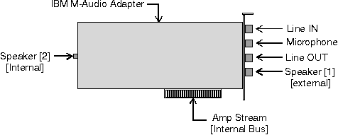

The following figure illustrates how the capabilities of an audio card might be modeled as an OS/2 amplifier-mixer device using connectors. This example uses the IBM M-Audio Capture and Playback Adapter, however a model can easily be defined for any manufacturer's audio card. The number and type of connectors may vary.

In this particular model, the speakers(1) connector is the default speakers connector and represents the physical speaker jack on the M-Audio card. The speakers(2) connector represents the internal connection to the PC speaker. The amp stream connector represents the flow of digital information to and from the audio card.